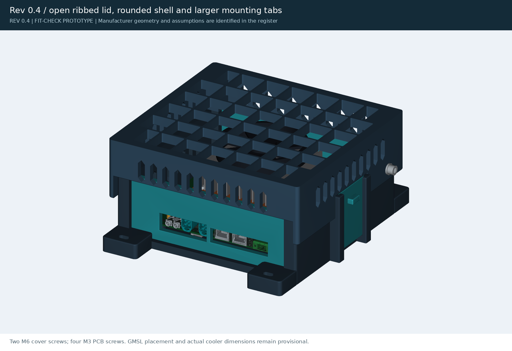
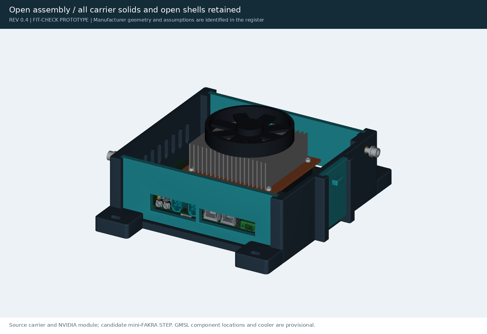
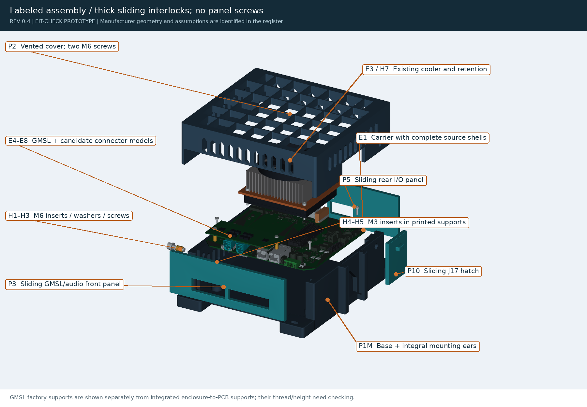
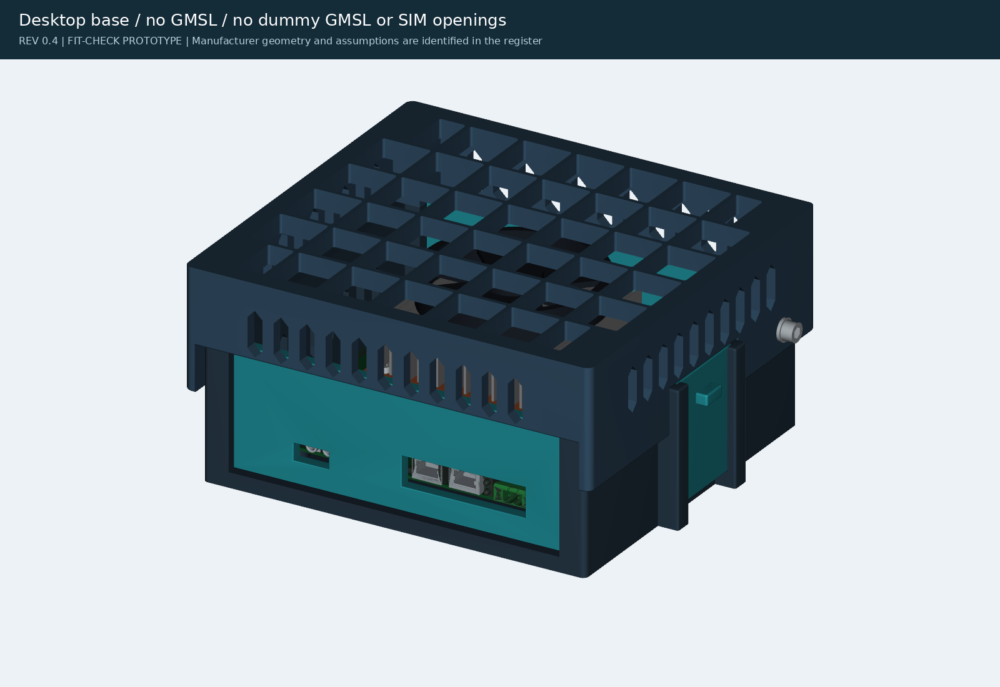
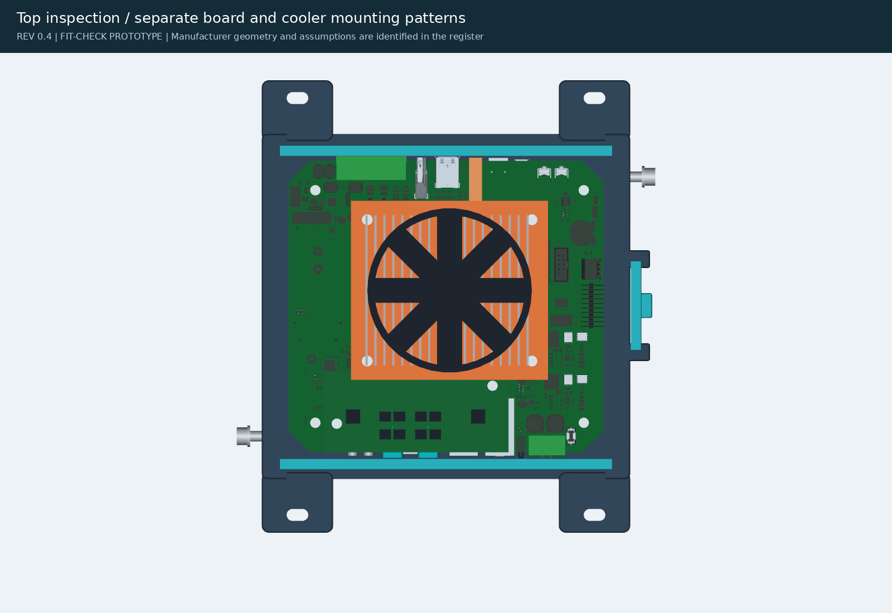
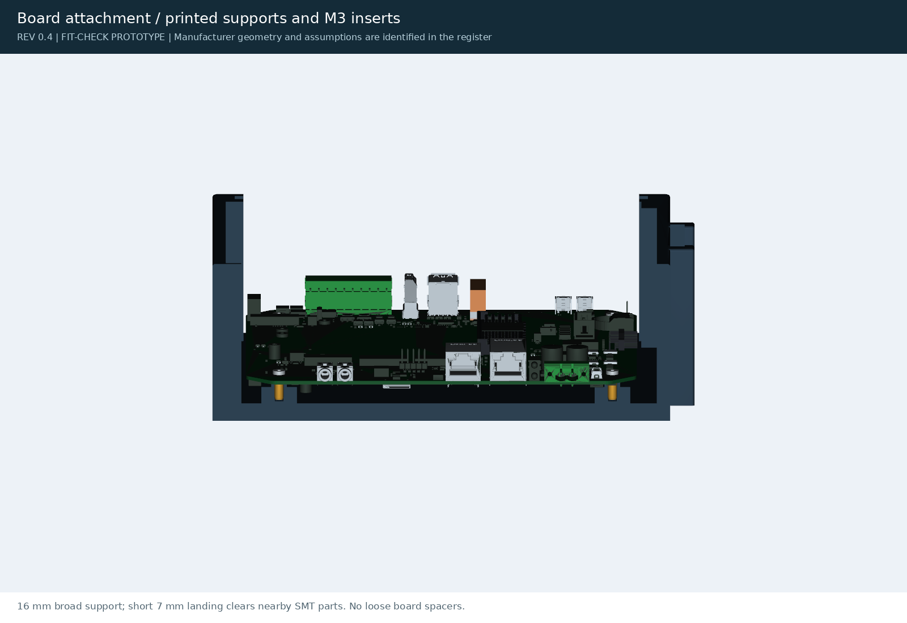
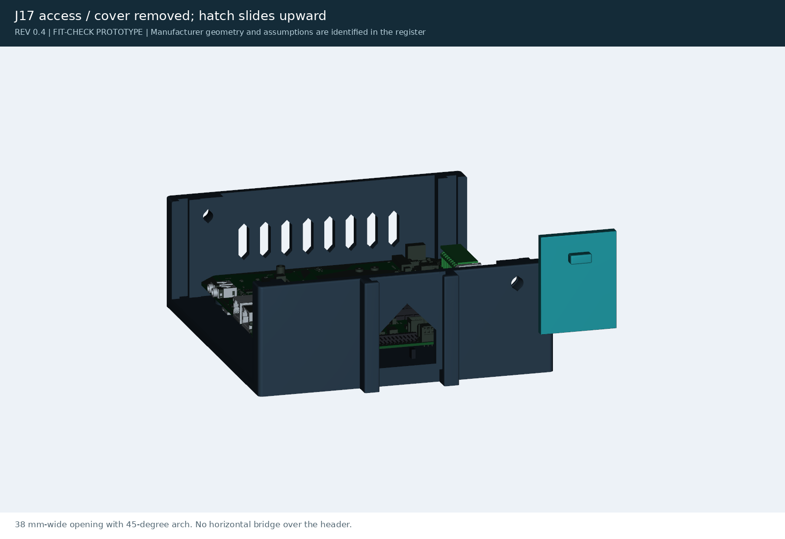
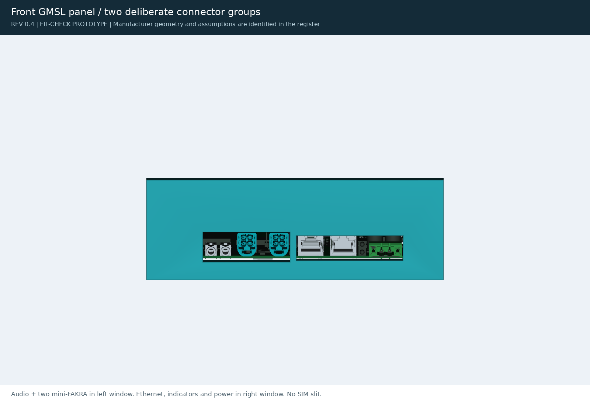
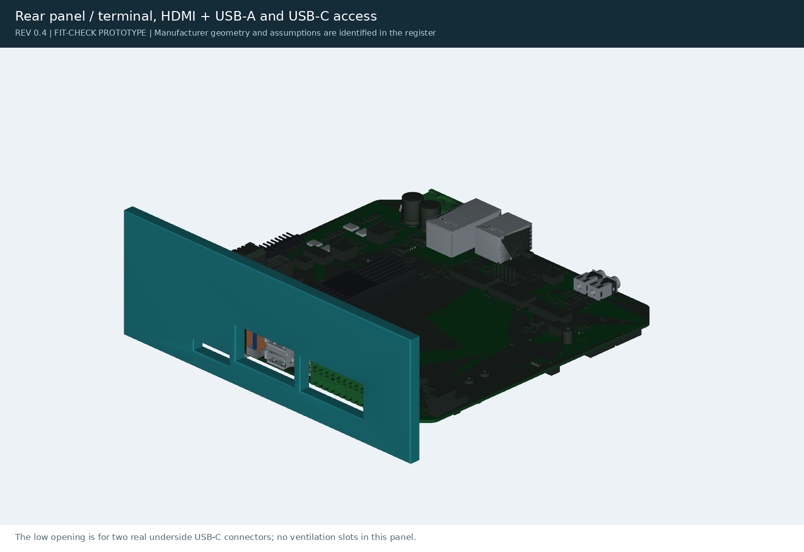

2 M6 + 4 M3Enclosure/PCB screws; panels need none
8 / 6 / 16 mmFloor / walls and panels / mounting ears
217 × 253 × 72Largest base print; check brim and P1S exclusions
Review status and remaining measurements
The CAD has been revised for print orientation and assembly. It remains a fit-check prototype. The exact cooler, GMSL XY placement and hardware, single USB-A J26 model, selected cable boots and filament still need confirmation. Nominal GMSL-PCB-to-cooler clearance is only 1.58 mm in the overlapping strip; this excludes top components and actual thermal-interface offsets.
More open roof · stronger rib section · rounded exterior
67.37% open roof area, up from 25.58%. The 42-cell grid uses 2.4 × 10 mm upright ribs and reinforced corner lands. Base/lid corners, exterior rims, panel face edges, hatch grip and mounting pads now have fillets.
The 40 mm-wide, 16 mm-thick tabs project 30 mm at the front/rear. Their 16 mm washer and 20 mm driver envelopes clear the lid. The 253 mm print length leaves 1.5 mm nominal P1S bed margin per end, before a brim. Deep ribs leave 11.242 mm nominal clearance above the reference cooler.
Area, rib section and mounting-access calculations · Mounting-pad and washer checks · Dimensioned lid and mounting sheets
Assembled · wall/robot base with GMSL

Two cover screws retain the cap. The cap captures the rigid front, rear and side panels in their sliding channels. Mounting ears are part of the base.
Open inspection

The carrier's 158 open surface shells are now included along with its solid bodies. Cooler fins and GMSL placement remain provisional.
Exploded · labels and hardware

Every retained fastener family is shown. Existing cooler/GMSL hardware is distinct from the six enclosure/PCB screws.
Desktop · without GMSL

No GMSL or nano-SIM slit in this front panel. Remove the front panel for SIM service.
Top inspection

The cooler fastens at the inner board mounting pattern. The outer pattern secures the PCB to printed supports.
Board retention and third-side J17 access

Broad 16 mm supports with short 7 mm lands protect nearby underside components. Four M3 inserts and screws; no loose spacers.

The thick hatch slides upward after cover removal. A 45° arch avoids a wide unsupported bridge over J17.
Every cutout has a stated purpose

GMSL front: audio and two mini-FAKRA ports share one window; network, indicators and power use the second. No-GMSL front: audio window only in the left region.

Rear: industrial terminal, HDMI/USB-A group and the two genuine underside USB-C ports. The lower slot is connector access, not ventilation.
Cutout register · Labeled dimensions on PDF sheets 4–6
Off-the-shelf parts and electronics
NVIDIA module and candidate mini-FAKRA use downloaded STEP geometry. Fastener threads, cooler internals and unlocated GMSL components are illustrative. The inventory states where Seeed's own model is simplified or uses a substitute library part.
Individual carrier connector geometry
Extracted source bodies. The complete assembly additionally includes open shells; individual body previews are not evidence of complete vendor models.
Evidence, BOM and missing models
No standalone official assembly BOM or complete GMSL STEP was found in the checked Seeed resources. The component inventory is derived from schematics and CAD. Exact mini-FAKRA manufacturer, cooler, mating cables and several generic connector MPNs remain open.
CAD, print files and validation
STLs are oriented on the bed. STEP parts use assembly coordinates. Print the insert/rail coupons and mount template first. Older spacer/ear hardware designs are archived and are not part of this revision.
CAD checks do not certify physical fit, cable access, insert pullout, temperature, vibration or wall/robot load capacity. Material and printer fits remain unqualified.